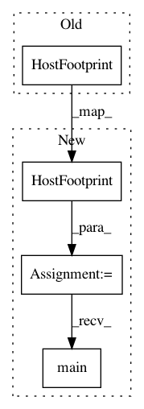

935cd2964792ab814b7aa0e4d9ef20ff024f54e4,tests/test_algorithms_host_footprint.py,,test_train_bad_data_too_few_columns,#,26
Before Change
operation = "train"
sys.argv = ["host_footprint.py", "--operation", operation, input_file]
with pytest.raises(Exception):
HostFootprint()
After Change
input_file = "./tests/test_data/bad_data_too_few_columns.csv"
operation = "train"
sys.argv = ["host_footprint.py", "--operation", operation, input_file]
instance = HostFootprint()
with pytest.raises(Exception):
instance.main()
In pattern: SUPERPATTERN
Frequency: 3
Non-data size: 4
Instances
Project Name: CyberReboot/NetworkML
Commit Name: 935cd2964792ab814b7aa0e4d9ef20ff024f54e4
Time: 2020-02-26
Author: clewis@iqt.org
File Name: tests/test_algorithms_host_footprint.py
Class Name:
Method Name: test_train_bad_data_too_few_columns
Project Name: CyberReboot/NetworkML
Commit Name: 935cd2964792ab814b7aa0e4d9ef20ff024f54e4
Time: 2020-02-26
Author: clewis@iqt.org
File Name: tests/test_algorithms_host_footprint.py
Class Name:
Method Name: test_train
Project Name: CyberReboot/NetworkML
Commit Name: 935cd2964792ab814b7aa0e4d9ef20ff024f54e4
Time: 2020-02-26
Author: clewis@iqt.org
File Name: tests/test_algorithms_host_footprint.py
Class Name:
Method Name: test_predict